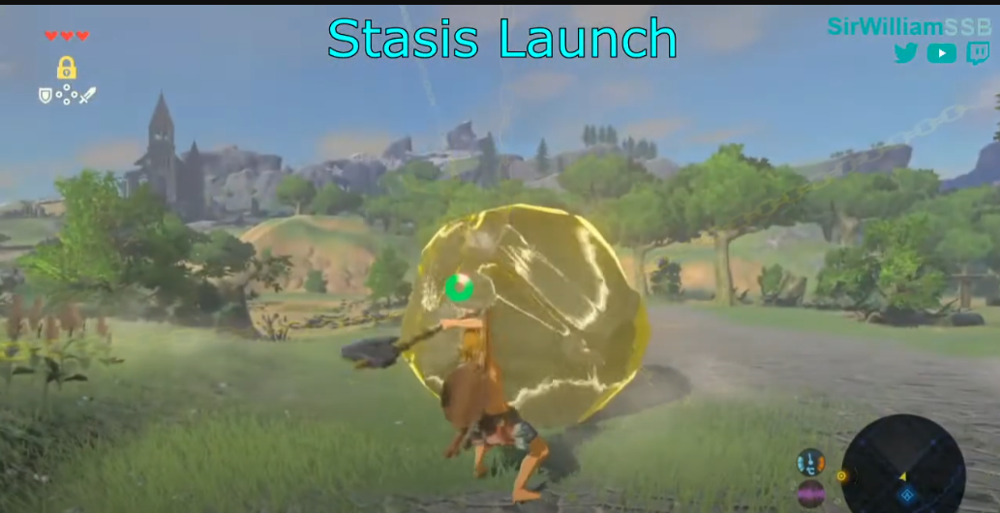

GUIA DE ZELDA
-----------------------------------------------------------------------------------------------------------------------------------------------
Whistle sprinting
Este truco sirve para no gastar estamina y correr por mas tiempo
1.Tienes que precionar el boton de correr
2.cuando veas que se va a cabar la estamina aplasta silvar
Esto hara que se bugue el juego y puedas correr sin gastar estamina
Fall Damage Cancel
Este truco sirve para no resivir daño de caida
1.En la caida debes apuntar con un arma
2.Cuando estes apunto de tocar el suelo desequipa el arma
Doble Salto
este truco sirve para surfear con el escudo
1.debes saltar
2.Debes sacar el escudo en el aire
3.Ensegida de sacar el escudo golpea

Stasis Launch
Este truco nos srive para volar con un objeto
1.Debes tener un arma de mango doble
2.Debes paralizar al objeto
3.Debes golper moviendo el analogo al sentido contrario
4.Al final lanza una flecha y subete al objeto
